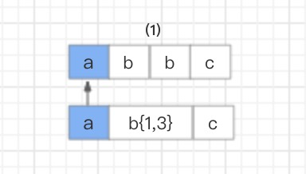

Java性能调优2
Java性能调优2 —- Java编程性能调优
1. 字符串性能优化
String 对象是我们使用最频繁的一个对象类型，但它的性能问题却是最容易被忽略的。String 对象作为 Java 语言中重要的数据类型，是内存中占据空间最大的一个对象。高效地使用字符串，可以提升系统的整体性能。
思考题
|
|
1.1 String 对象是如何实现的？
在 Java 语言中，Sun 公司的工程师们对 String 对象做了大量的优化，来节约内存空间，提升 String 对象在系统中的性能。一起来看看优化过程，如下图所示：

- 在 Java6 以及之前的版本中，String 对象是对 char 数组进行了封装实现的对象，主要有四个成员变量：char 数组、偏移量 offset、字符数量 count、哈希值 hash。
String 对象是通过 offset 和 count 两个属性来定位 char[] 数组，获取字符串。这么做可以高效、快速地共享数组对象，同时节省内存空间，但这种方式很有可能会导致内存泄漏。
-
从 Java7 版本开始到 Java8 版本，Java 对 String 类做了一些改变。String 类中不再有 offset 和 count 两个变量了。这样的好处是 String 对象占用的内存稍微少了些，同时，String.substring 方法也不再共享 char[]，从而解决了使用该方法可能导致的内存泄漏问题。
-
从 Java9 版本开始，工程师将 char[] 字段改为了 byte[] 字段，又维护了一个新的属性 coder，它是一个编码格式的标识。
为什么这样修改呢？
我们知道一个 char 字符占 16 位，2 个字节。这个情况下，存储单字节编码内的字符（占一个字节的字符）就显得非常浪费。JDK1.9 的 String 类为了节约内存空间，于是使用了占 8 位，1 个字节的 byte 数组来存放字符串。
而新属性 coder 的作用是，在计算字符串长度或者使用 indexOf（）函数时，我们需要根据这个字段，判断如何计算字符串长度。coder 属性默认有 0 和 1 两个值，0 代表 Latin-1（单字节编码），1 代表 UTF-16。如果 String 判断字符串只包含了 Latin-1，则 coder 属性值为 0，反之则为 1。
1.2 String 对象的不可变性
了解了 String 对象的实现后，你有没有发现在实现代码中 String 类被 final 关键字修饰了，而且变量 char 数组也被 final 修饰了。
我们知道类被 final 修饰代表该类不可继承，而 char[] 被 final+private 修饰，代表了 String 对象不可被更改。Java 实现的这个特性叫作 String 对象的不可变性，即 String 对象一旦创建成功，就不能再对它进行改变。
1.2.1 Java 这样做的好处在哪里呢？
第一，保证 String 对象的安全性。假设 String 对象是可变的，那么 String 对象将可能被恶意修改。
第二，保证 hash 属性值不会频繁变更，确保了唯一性，使得类似 HashMap 容器才能实现相应的 key-value 缓存功能。
第三，可以实现字符串常量池。在 Java 中，通常有两种创建字符串对象的方式，一种是通过字符串常量的方式创建，如 String str=“abc”；另一种是字符串变量通过 new 形式的创建，如 String str = new String(“abc”)。
当代码中使用第一种方式创建字符串对象时，JVM 首先会检查该对象是否在字符串常量池中，如果在，就返回该对象引用，否则新的字符串将在常量池中被创建。这种方式可以减少同一个值的字符串对象的重复创建，节约内存。
String str = new String(“abc”) 这种方式，首先在编译类文件时，“abc"常量字符串将会放入到常量结构中，在类加载时，“abc"将会在常量池中创建；其次，在调用 new 时，JVM 命令将会调用 String 的构造函数，同时引用常量池中的"abc” 字符串，在堆内存中创建一个 String 对象；最后，str 将引用 String 对象。
1.3 String 对象的优化
- 如何构建超大字符串？
编程过程中，字符串的拼接很常见。前面我讲过 String 对象是不可变的，如果我们使用 String 对象相加，拼接我们想要的字符串，是不是就会产生多个对象呢？例如以下代码：
|
|
分析代码可知：首先会生成 ab 对象，再生成 abcd 对象，最后生成 abcdef 对象，从理论上来说，这段代码是低效的。
但实际运行中，我们发现只有一个对象生成，这是为什么呢？难道我们的理论判断错了？我们再来看编译后的代码，你会发现编译器自动优化了这行代码，如下：
|
|
上面我介绍的是字符串常量的累计，我们再来看看字符串变量的累计又是怎样的呢？
|
|
上面的代码编译后，你可以看到编译器同样对这段代码进行了优化。不难发现，Java 在进行字符串的拼接时，偏向使用 StringBuilder，这样可以提高程序的效率。
|
|
综上已知：即使使用 + 号作为字符串的拼接，也一样可以被编译器优化成 StringBuilder 的方式。但再细致些，你会发现在编译器优化的代码中，每次循环都会生成一个新的 StringBuilder 实例，同样也会降低系统的性能。
所以平时做字符串拼接的时候，我建议你还是要显示地使用 String Builder 来提升系统性能。
如果在多线程编程中，String 对象的拼接涉及到线程安全，你可以使用 StringBuffer。但是要注意，由于 StringBuffer 是线程安全的，涉及到锁竞争，所以从性能上来说，要比 StringBuilder 差一些。
- 如何使用 String.intern 节省内存？
讲完了构建字符串，我们再来讨论下 String 对象的存储问题。先看一个案例。
Twitter 每次发布消息状态的时候，都会产生一个地址信息，以当时 Twitter 用户的规模预估，服务器需要 32G 的内存来存储地址信息。
|
|
考虑到其中有很多用户在地址信息上是有重合的，比如，国家、省份、城市等，这时就可以将这部分信息单独列出一个类，以减少重复，代码如下：
|
|
通过优化，数据存储大小减到了 20G 左右。但对于内存存储这个数据来说，依然很大，怎么办呢？
这个案例来自一位 Twitter 工程师在 QCon 全球软件开发大会上的演讲，他们想到的解决方法，就是使用 String.intern 来节省内存空间，从而优化 String 对象的存储。
具体做法就是，在每次赋值的时候使用 String 的 intern 方法，如果常量池中有相同值，就会重复使用该对象，返回对象引用，这样一开始的对象就可以被回收掉。这种方式可以使重复性非常高的地址信息存储大小从 20G 降到几百兆。
|
|
为了更好地理解，我们再来通过一个简单的例子，回顾下其中的原理：
|
|
输出结果：
|
|
在字符串常量中，默认会将对象放入常量池；在字符串变量中，对象是会创建在堆内存中，同时也会在常量池中创建一个字符串对象，复制到堆内存对象中，并返回堆内存对象引用。
如果调用 intern 方法，会去查看字符串常量池中是否有等于该对象的字符串，如果没有，就在常量池中新增该对象，并返回该对象引用；如果有，就返回常量池中的字符串引用。堆内存中原有的对象由于没有引用指向它，将会通过垃圾回收器回收。
- 如何使用字符串的分割方法？
最后我想跟你聊聊字符串的分割，这种方法在编码中也很最常见。Split() 方法使用了正则表达式实现了其强大的分割功能，而正则表达式的性能是非常不稳定的，使用不恰当会引起回溯问题，很可能导致 CPU 居高不下。
所以我们应该慎重使用 Split() 方法，我们可以用 String.indexOf() 方法代替 Split() 方法完成字符串的分割。如果实在无法满足需求，你就在使用 Split() 方法时，对回溯问题加以重视就可以了。
2. 正则表达式
2.1什么是正则表达式？
正则表达式是计算机科学的一个概念，很多语言都实现了它。正则表达式使用一些特定的元字符来检索、匹配以及替换符合规则的字符串。
构造正则表达式语法的元字符，由普通字符、标准字符、限定字符（量词）、定位字符（边界字符）组成。详情可见下图：
{kind=link}
2.2 正则表达式引擎
正则表达式是一个用正则符号写出的公式，程序对这个公式进行语法分析，建立一个语法分析树，再根据这个分析树结合正则表达式的引擎生成执行程序（这个执行程序我们把它称作状态机，也叫状态自动机），用于字符匹配。
而这里的正则表达式引擎就是一套核心算法，用于建立状态机。
目前实现正则表达式引擎的方式有两种：DFA 自动机（Deterministic Final Automata 确定有限状态自动机）和 NFA 自动机（Non deterministic Finite Automaton 非确定有限状态自动机）。
对比来看，构造 DFA 自动机的代价远大于 NFA 自动机，但 DFA 自动机的执行效率高于 NFA 自动机。
假设一个字符串的长度是 n，如果用 DFA 自动机作为正则表达式引擎，则匹配的时间复杂度为 O(n)；如果用 NFA 自动机作为正则表达式引擎，由于 NFA 自动机在匹配过程中存在大量的分支和回溯，假设 NFA 的状态数为 s，则该匹配算法的时间复杂度为 O（ns）。
NFA 自动机的优势是支持更多功能。例如，捕获 group、环视、占有优先量词等高级功能。这些功能都是基于子表达式独立进行匹配，因此在编程语言里，使用的正则表达式库都是基于 NFA 实现的。
那么 NFA 自动机到底是怎么进行匹配的呢？我以下面的字符和表达式来举例说明。
text=“aabcab” regex=“bc”
NFA 自动机会读取正则表达式的每一个字符，拿去和目标字符串匹配，匹配成功就换正则表达式的下一个字符，反之就继续和目标字符串的下一个字符进行匹配。分解一下过程。
首先，读取正则表达式的第一个匹配符和字符串的第一个字符进行比较，b 对 a，不匹配；继续换字符串的下一个字符，也是 a，不匹配；继续换下一个，是 b，匹配。
然后，同理，读取正则表达式的第二个匹配符和字符串的第四个字符进行比较，c 对 c，匹配；继续读取正则表达式的下一个字符，然而后面已经没有可匹配的字符了，结束。
这就是 NFA 自动机的匹配过程，虽然在实际应用中，碰到的正则表达式都要比这复杂，但匹配方法是一样的。
{kind=link}
{kind=link}
2.3 NFA 自动机的回溯
用 NFA 自动机实现的比较复杂的正则表达式，在匹配过程中经常会引起回溯问题。大量的回溯会长时间地占用 CPU，从而带来系统性能开销。我来举例说明。
text=“abbc” regex=“ab{1,3}c”
这个例子，匹配目的比较简单。匹配以 a 开头，以 c 结尾，中间有 1-3 个 b 字符的字符串。NFA 自动机对其解析的过程是这样的：
首先，读取正则表达式第一个匹配符 a 和字符串第一个字符 a 进行比较，a 对 a，匹配。
 然后，读取正则表达式第二个匹配符 b{1,3} 和字符串的第二个字符 b 进行比较，匹配。但因为 b{1,3} 表示 1-3 个 b 字符串，NFA 自动机又具有贪婪特性，所以此时不会继续读取正则表达式的下一个匹配符，而是依旧使用 b{1,3} 和字符串的第三个字符 b 进行比较，结果还是匹配。
{kind=link}
{kind=link}
接着继续使用 b{1,3} 和字符串的第四个字符 c 进行比较，发现不匹配了，此时就会发生回溯，已经读取的字符串第四个字符 c 将被吐出去，指针回到第三个字符 b 的位置。
{kind=link}
那么发生回溯以后，匹配过程怎么继续呢？程序会读取正则表达式的下一个匹配符 c，和字符串中的第四个字符 c 进行比较，结果匹配，结束。
{kind=link}
2.4 如何避免回溯问题？
既然回溯会给系统带来性能开销，那我们如何应对呢？如果你有仔细看上面那个案例的话，你会发现 NFA 自动机的贪婪特性就是导火索，这和正则表达式的匹配模式息息相关，一起来了解一下。
2.4.1 贪婪模式（Greedy）
顾名思义，就是在数量匹配中，如果单独使用 +、 ? 、* 或{min,max} 等量词，正则表达式会匹配尽可能多的内容。
例如，上边那个例子：
text=“abbc” regex=“ab{1,3}c”
就是在贪婪模式下，NFA 自动机读取了最大的匹配范围，即匹配 3 个 b 字符。匹配发生了一次失败，就引起了一次回溯。如果匹配结果是“abbbc”，就会匹配成功。
text=“abbbc” regex=“ab{1,3}c”
2.4.2 懒惰模式（Reluctant）
在该模式下，正则表达式会尽可能少地重复匹配字符。如果匹配成功，它会继续匹配剩余的字符串。
例如，在上面例子的字符后面加一个“？”，就可以开启懒惰模式。
text=“abc” regex=“ab{1,3}?c”
匹配结果是“abc”，该模式下 NFA 自动机首先选择最小的匹配范围，即匹配 1 个 b 字符，因此就避免了回溯问题。
2.4.3 独占模式（Possessive）
同贪婪模式一样，独占模式一样会最大限度地匹配更多内容；不同的是，在独占模式下，匹配失败就会结束匹配，不会发生回溯问题。
还是上边的例子，在字符后面加一个“+”，就可以开启独占模式。
text=“abbc” regex=“ab{1,3}+bc”
结果是不匹配，结束匹配，不会发生回溯问题。讲到这里，你应该非常清楚了，避免回溯的方法就是：使用懒惰模式和独占模式。
2.5 正则表达式的优化
2.5.1 1. 少用贪婪模式，多用独占模式
贪婪模式会引起回溯问题，我们可以使用独占模式来避免回溯。前面详解过了，这里我就不再解释了。
2.5.2 减少分支选择
分支选择类型“(X|Y|Z)”的正则表达式会降低性能，我们在开发的时候要尽量减少使用。如果一定要用，我们可以通过以下几种方式来优化：
首先，我们需要考虑选择的顺序，将比较常用的选择项放在前面，使它们可以较快地被匹配；
其次，我们可以尝试提取共用模式，例如，将“(abcd|abef)”替换为“ab(cd|ef)”，后者匹配速度较快，因为 NFA 自动机会尝试匹配 ab，如果没有找到，就不会再尝试任何选项；
最后，如果是简单的分支选择类型，我们可以用三次 index 代替“(X|Y|Z)”，如果测试的话，你就会发现三次 index 的效率要比“(X|Y|Z)”高出一些。
2.5.3 减少捕获嵌套
在讲这个方法之前，我先简单介绍下什么是捕获组和非捕获组。
捕获组是指把正则表达式中，子表达式匹配的内容保存到以数字编号或显式命名的数组中，方便后面引用。一般一个 () 就是一个捕获组，捕获组可以进行嵌套。
非捕获组则是指参与匹配却不进行分组编号的捕获组，其表达式一般由（?:exp）组成。
在正则表达式中，每个捕获组都有一个编号，编号 0 代表整个匹配到的内容。我们可以看下面的例子：
|
|
运行结果：
|
|
如果你并不需要获取某一个分组内的文本，那么就使用非捕获分组。例如，使用“(?:X)”代替“(X)”，我们再看下面的例子：
|
|
运行结果：
|
|
综上可知：减少不需要获取的分组，可以提高正则表达式的性能。
3. ArrayList还是LinkedList？使用不当性能差千倍
集合作为一种存储数据的容器，是我们日常开发中使用最频繁的对象类型之一。JDK 为开发者提供了一系列的集合类型，这些集合类型使用不同的数据结构来实现。因此，不同的集合类型，使用场景也不同。
很多同学在面试的时候，经常会被问到集合的相关问题，比较常见的有 ArrayList 和 LinkedList 的区别。
相信大部分同学都能回答上：“ArrayList 是基于数组实现，LinkedList 是基于链表实现。”
而在回答使用场景的时候，我发现大部分同学的答案是：“ArrayList 和 LinkedList 在新增、删除元素时，LinkedList 的效率要高于 ArrayList，而在遍历的时候，ArrayList 的效率要高于 LinkedList。”这个回答是否准确呢？今天这一讲就带你验证。
3.1 初识 List 接口
在学习 List 集合类之前，我们先来通过这张图，看下 List 集合类的接口和类的实现关系：
{kind=link}
我们可以看到 ArrayList、Vector、LinkedList 集合类继承了 AbstractList 抽象类，而 AbstractList 实现了 List 接口，同时也继承了 AbstractCollection 抽象类。ArrayList、Vector、LinkedList 又根据自我定位，分别实现了各自的功能。
ArrayList 和 Vector 使用了数组实现，这两者的实现原理差不多，LinkedList 使用了双向链表实现。基础铺垫就到这里，接下来，我们就详细地分析下 ArrayList 和 LinkedList 的源码实现。
3.2 ArrayList 是如何实现的？
ArrayList 很常用，先来几道测试题，自检下你对 ArrayList 的了解程度。
问题 1：我们在查看 ArrayList 的实现类源码时，你会发现对象数组 elementData 使用了 transient 修饰，我们知道 transient 关键字修饰该属性，则表示该属性不会被序列化，然而我们并没有看到文档中说明 ArrayList 不能被序列化，这是为什么？
问题 2：我们在使用 ArrayList 进行新增、删除时，经常被提醒“使用 ArrayList 做新增删除操作会影响效率”。那是不是 ArrayList 在大量新增元素的场景下效率就一定会变慢呢？
问题 3：如果让你使用 for 循环以及迭代循环遍历一个 ArrayList，你会使用哪种方式呢？原因是什么？
如果你对这几道测试都没有一个全面的了解，那就跟我一起从数据结构、实现原理以及源码角度重新认识下 ArrayList 吧。
3.2.1 ArrayList 实现类
ArrayList 实现了 List 接口，继承了 AbstractList 抽象类，底层是数组实现的，并且实现了自增扩容数组大小。
ArrayList 还实现了 Cloneable 接口和 Serializable 接口，所以他可以实现克隆和序列化。
ArrayList 还实现了 RandomAccess 接口。你可能对这个接口比较陌生，不知道具体的用处。通过代码我们可以发现，这个接口其实是一个空接口，什么也没有实现，那 ArrayList 为什么要去实现它呢？
其实 RandomAccess 接口是一个标志接口，他标志着“只要实现该接口的 List 类，都能实现快速随机访问”。
3.2.2 ArrayList 属性
ArrayList 属性主要由数组长度 size、对象数组 elementData、初始化容量 default_capacity 等组成， 其中初始化容量默认大小为 10。
|
|
从 ArrayList 属性来看，它没有被任何的多线程关键字修饰，但 elementData 被关键字 transient 修饰了。这就是我在上面提到的第一道测试题：transient 关键字修饰该字段则表示该属性不会被序列化，但 ArrayList 其实是实现了序列化接口，这到底是怎么回事呢？
这还得从“ArrayList 是基于数组实现“开始说起，由于 ArrayList 的数组是基于动态扩增的，所以并不是所有被分配的内存空间都存储了数据。
如果采用外部序列化法实现数组的序列化，会序列化整个数组。ArrayList 为了避免这些没有存储数据的内存空间被序列化，内部提供了两个私有方法 writeObject 以及 readObject 来自我完成序列化与反序列化，从而在序列化与反序列化数组时节省了空间和时间。
因此使用 transient 修饰数组，是防止对象数组被其他外部方法序列化。
3.2.3 ArrayList 构造函数
ArrayList 类实现了三个构造函数，第一个是创建 ArrayList 对象时，传入一个初始化值；第二个是默认创建一个空数组对象；第三个是传入一个集合类型进行初始化。
当 ArrayList 新增元素时，如果所存储的元素已经超过其已有大小，它会计算元素大小后再进行动态扩容，数组的扩容会导致整个数组进行一次内存复制。因此，我们在初始化 ArrayList 时，可以通过第一个构造函数合理指定数组初始大小，这样有助于减少数组的扩容次数，从而提高系统性能。
|
|
3.2.4 ArrayList 新增元素
ArrayList 新增元素的方法有两种，一种是直接将元素加到数组的末尾，另外一种是添加元素到任意位置。
|
|
两个方法的相同之处是在添加元素之前，都会先确认容量大小，如果容量够大，就不用进行扩容；如果容量不够大，就会按照原来数组的 1.5 倍大小进行扩容，在扩容之后需要将数组复制到新分配的内存地址。
|
|
当然，两个方法也有不同之处，添加元素到任意位置，会导致在该位置后的所有元素都需要重新排列，而将元素添加到数组的末尾，在没有发生扩容的前提下，是不会有元素复制排序过程的。
这里你就可以找到第二道测试题的答案了。如果我们在初始化时就比较清楚存储数据的大小，就可以在 ArrayList 初始化时指定数组容量大小，并且在添加元素时，只在数组末尾添加元素，那么 ArrayList 在大量新增元素的场景下，性能并不会变差，反而比其他 List 集合的性能要好。
3.2.5 ArrayList 删除元素
ArrayList 的删除方法和添加任意位置元素的方法是有些相同的。ArrayList 在每一次有效的删除元素操作之后，都要进行数组的重组，并且删除的元素位置越靠前，数组重组的开销就越大。
|
|
3.2.6 ArrayList 遍历元素
由于 ArrayList 是基于数组实现的，所以在获取元素的时候是非常快捷的。
|
|
3.3 LinkedList 是如何实现的？
虽然 LinkedList 与 ArrayList 都是 List 类型的集合，但 LinkedList 的实现原理却和 ArrayList 大相径庭，使用场景也不太一样。
LinkedList 是基于双向链表数据结构实现的，LinkedList 定义了一个 Node 结构，Node 结构中包含了 3 个部分：元素内容 item、前指针 prev 以及后指针 next，代码如下。
|
|
总结一下，LinkedList 就是由 Node 结构对象连接而成的一个双向链表。在 JDK1.7 之前，LinkedList 中只包含了一个 Entry 结构的 header 属性，并在初始化的时候默认创建一个空的 Entry，用来做 header，前后指针指向自己，形成一个循环双向链表。
在 JDK1.7 之后，LinkedList 做了很大的改动，对链表进行了优化。链表的 Entry 结构换成了 Node，内部组成基本没有改变，但 LinkedList 里面的 header 属性去掉了，新增了一个 Node 结构的 first 属性和一个 Node 结构的 last 属性。这样做有以下几点好处：
-
first/last 属性能更清晰地表达链表的链头和链尾概念；
-
first/last 方式可以在初始化 LinkedList 的时候节省 new 一个 Entry；
-
first/last 方式最重要的性能优化是链头和链尾的插入删除操作更加快捷了。
这里同 ArrayList 的讲解一样，我将从数据结构、实现原理以及源码分析等几个角度带你深入了解 LinkedList。
3.3.1 LinkedList 实现类
LinkedList 类实现了 List 接口、Deque 接口，同时继承了 AbstractSequentialList 抽象类，LinkedList 既实现了 List 类型又有 Queue 类型的特点；LinkedList 也实现了 Cloneable 和 Serializable 接口，同 ArrayList 一样，可以实现克隆和序列化。
由于 LinkedList 存储数据的内存地址是不连续的，而是通过指针来定位不连续地址，因此，LinkedList 不支持随机快速访问，LinkedList 也就不能实现 RandomAccess 接口。
|
|
3.3.2 LinkedList 属性
我们前面讲到了 LinkedList 的两个重要属性 first/last 属性，其实还有一个 size 属性。我们可以看到这三个属性都被 transient 修饰了，原因很简单，我们在序列化的时候不会只对头尾进行序列化，所以 LinkedList 也是自行实现 readObject 和 writeObject 进行序列化与反序列化。
|
|
3.3.3 LinkedList 新增元素
LinkedList 添加元素的实现很简洁，但添加的方式却有很多种。默认的 add (Ee) 方法是将添加的元素加到队尾，首先是将 last 元素置换到临时变量中，生成一个新的 Node 节点对象，然后将 last 引用指向新节点对象，之前的 last 对象的前指针指向新节点对象。
|
|
LinkedList 也有添加元素到任意位置的方法，如果我们是将元素添加到任意两个元素的中间位置，添加元素操作只会改变前后元素的前后指针，指针将会指向添加的新元素，所以相比 ArrayList 的添加操作来说，LinkedList 的性能优势明显。
|
|
3.3.4 LinkedList 删除元素
在 LinkedList 删除元素的操作中，我们首先要通过循环找到要删除的元素，如果要删除的位置处于 List 的前半段，就从前往后找；若其位置处于后半段，就从后往前找。
这样做的话，无论要删除较为靠前或较为靠后的元素都是非常高效的，但如果 List 拥有大量元素，移除的元素又在 List 的中间段，那效率相对来说会很低。
3.3.5 LinkedList 遍历元素
LinkedList 的获取元素操作实现跟 LinkedList 的删除元素操作基本类似，通过分前后半段来循环查找到对应的元素。但是通过这种方式来查询元素是非常低效的，特别是在 for 循环遍历的情况下，每一次循环都会去遍历半个 List。
所以在 LinkedList 循环遍历时，我们可以使用 iterator 方式迭代循环，直接拿到我们的元素，而不需要通过循环查找 List。
3.4 Stream如何提高遍历集合效率？
在 Java8 之前，我们通常是通过 for 循环或者 Iterator 迭代来重新排序合并数据，又或者通过重新定义 Collections.sorts 的 Comparator 方法来实现，这两种方式对于大数据量系统来说，效率并不是很理想。
Java8 中添加了一个新的接口类 Stream，他和我们之前接触的字节流概念不太一样，Java8 集合中的 Stream 相当于高级版的 Iterator，他可以通过 Lambda 表达式对集合进行各种非常便利、高效的聚合操作（Aggregate Operation），或者大批量数据操作 (Bulk Data Operation)。
这个 Demo 的需求是过滤分组一所中学里身高在 160cm 以上的男女同学，我们先用传统的迭代方式来实现，代码如下：
|
|
我们再使用 Java8 中的 Stream API 进行实现：
- 串行实现
|
|
- 并行实现
|
|
3.4.1 Stream 如何优化遍历？
3.4.1.1.Stream 操作分类
官方将 Stream 中的操作分为两大类：中间操作（Intermediate operations）和终结操作（Terminal operations）。中间操作只对操作进行了记录，即只会返回一个流，不会进行计算操作，而终结操作是实现了计算操作。
中间操作又可以分为无状态（Stateless）与有状态（Stateful）操作，前者是指元素的处理不受之前元素的影响，后者是指该操作只有拿到所有元素之后才能继续下去。
终结操作又可以分为短路（Short-circuiting）与非短路（Unshort-circuiting）操作，前者是指遇到某些符合条件的元素就可以得到最终结果，后者是指必须处理完所有元素才能得到最终结果。操作分类详情如下图所示：

我们通常还会将中间操作称为懒操作，也正是由这种懒操作结合终结操作、数据源构成的处理管道（Pipeline），实现了 Stream 的高效。
3.4.1.2.Stream 源码实现
在了解 Stream 如何工作之前，我们先来了解下 Stream 包是由哪些主要结构类组合而成的，各个类的职责是什么。参照下图：
{kind=link}
BaseStream 和 Stream 为最顶端的接口类。BaseStream 主要定义了流的基本接口方法，例如，spliterator、isParallel 等；Stream 则定义了一些流的常用操作方法，例如，map、filter 等。
ReferencePipeline 是一个结构类，他通过定义内部类组装了各种操作流。他定义了 Head、StatelessOp、StatefulOp 三个内部类，实现了 BaseStream 与 Stream 的接口方法。
Sink 接口是定义每个 Stream 操作之间关系的协议，他包含 begin()、end()、cancellationRequested()、accpt() 四个方法。ReferencePipeline 最终会将整个 Stream 流操作组装成一个调用链，而这条调用链上的各个 Stream 操作的上下关系就是通过 Sink 接口协议来定义实现的。
3.4.1.3.Stream 操作叠加
我们知道，一个 Stream 的各个操作是由处理管道组装，并统一完成数据处理的。在 JDK 中每次的中断操作会以使用阶段（Stage）命名。
管道结构通常是由 ReferencePipeline 类实现的，前面讲解 Stream 包结构时，我提到过 ReferencePipeline 包含了 Head、StatelessOp、StatefulOp 三种内部类。
Head 类主要用来定义数据源操作，在我们初次调用 names.stream() 方法时，会初次加载 Head 对象，此时为加载数据源操作；接着加载的是中间操作，分别为无状态中间操作
StatelessOp 对象和有状态操作 StatefulOp 对象，此时的 Stage 并没有执行，而是通过 AbstractPipeline 生成了一个中间操作 Stage 链表；当我们调用终结操作时，会生成一个最终的 Stage，通过这个 Stage 触发之前的中间操作，从最后一个 Stage 开始，递归产生一个 Sink 链。
下面我们再通过一个例子来感受下 Stream 的操作分类是如何实现高效迭代大数据集合的。
|
|
这个例子的需求是查找出一个长度最长，并且以张为姓氏的名字。从代码角度来看，你可能会认为是这样的操作流程：首先遍历一次集合，得到以“张”开头的所有名字；然后遍历一次 filter 得到的集合，将名字转换成数字长度；最后再从长度集合中找到最长的那个名字并且返回。
3.4.1.4.Stream 并行处理
Stream 处理数据的方式有两种，串行处理和并行处理。要实现并行处理，我们只需要在例子的代码中新增一个 Parallel() 方法，
|
|
Stream 的并行处理在执行终结操作之前，跟串行处理的实现是一样的。而在调用终结方法之后，实现的方式就有点不太一样，会调用 TerminalOp 的 evaluateParallel 方法进行并行处理。
|
|
这里的并行处理指的是，Stream 结合了 ForkJoin 框架，对 Stream 处理进行了分片，Splititerator 中的 estimateSize 方法会估算出分片的数据量。
ForkJoin 框架和估算算法，在这里我就不具体讲解了，如果感兴趣，你可以深入源码分析下该算法的实现。
通过预估的数据量获取最小处理单元的阀值，如果当前分片大小大于最小处理单元的阀值，就继续切分集合。每个分片将会生成一个 Sink 链表，当所有的分片操作完成后，ForkJoin 框架将会合并分片任何结果集。
3.5 深入浅出HashMap的设计与优化
3.5.1 常用的数据结构
数组：采用一段连续的存储单元来存储数据。对于指定下标的查找，时间复杂度为 O(1)，但在数组中间以及头部插入数据时，需要复制移动后面的元素。
链表：一种在物理存储单元上非连续、非顺序的存储结构，数据元素的逻辑顺序是通过链表中的指针链接次序实现的。
哈希表：根据关键码值（Key value）直接进行访问的数据结构。通过把关键码值映射到表中一个位置来访问记录，以加快查找的速度。这个映射函数叫做哈希函数，存放记录的数组就叫做哈希表。
树：由 n（n≥1）个有限结点组成的一个具有层次关系的集合，就像是一棵倒挂的树。
3.5.2 HashMap 的实现结构
哈希表将键的 Hash 值映射到内存地址，即根据键获取对应的值，并将其存储到内存地址。也就是说 HashMap 是根据键的 Hash 值来决定对应值的存储位置。通过这种索引方式，HashMap 获取数据的速度会非常快。
例如，存储键值对（x，“aa”）时，哈希表会通过哈希函数 f(x) 得到"aa"的实现存储位置。
但也会有新的问题。如果再来一个 (y，“bb”)，哈希函数 f(y) 的哈希值跟之前 f(x) 是一样的，这样两个对象的存储地址就冲突了，这种现象就被称为哈希冲突。那么哈希表是怎么解决的呢？方式有很多，比如，开放定址法、再哈希函数法和链地址法。
开放定址法很简单，当发生哈希冲突时，如果哈希表未被装满，说明在哈希表中必然还有空位置，那么可以把 key 存放到冲突位置的空位置上去。这种方法存在着很多缺点，例如，查找、扩容等，所以我不建议你作为解决哈希冲突的首选。
再哈希法顾名思义就是在同义词产生地址冲突时再计算另一个哈希函数地址，直到冲突不再发生，这种方法不易产生“聚集”，但却增加了计算时间。如果我们不考虑添加元素的时间成本，且对查询元素的要求极高，就可以考虑使用这种算法设计。
HashMap 则是综合考虑了所有因素，采用链地址法解决哈希冲突问题。这种方法是采用了数组（哈希表）+ 链表的数据结构，当发生哈希冲突时，就用一个链表结构存储相同 Hash 值的数据。
3.5.3 HashMap 的重要属性
从 HashMap 的源码中，我们可以发现，HashMap 是由一个 Node 数组构成，每个 Node 包含了一个 key-value 键值对。
|
|
Node 类作为 HashMap 中的一个内部类，除了 key、value 两个属性外，还定义了一个 next 指针。当有哈希冲突时，HashMap 会用之前数组当中相同哈希值对应存储的 Node 对象，通过指针指向新增的相同哈希值的 Node 对象的引用。
|
|
ashMap 还有两个重要的属性：加载因子（loadFactor）和边界值（threshold）。在初始化 HashMap 时，就会涉及到这两个关键初始化参数。
|
|
LoadFactor 属性是用来间接设置 Entry 数组（哈希表）的内存空间大小，在初始 HashMap 不设置参数的情况下，默认 LoadFactor 值为 0.75。为什么是 0.75 这个值呢？
这是因为对于使用链表法的哈希表来说，查找一个元素的平均时间是 O(1+n)，这里的 n 指的是遍历链表的长度，因此加载因子越大，对空间的利用就越充分，这就意味着链表的长度越长，查找效率也就越低。如果设置的加载因子太小，那么哈希表的数据将过于稀疏，对空间造成严重浪费。
Entry 数组的 Threshold 是通过初始容量和 LoadFactor 计算所得，在初始 HashMap 不设置参数的情况下，默认边界值为 12。如果我们在初始化时，设置的初始化容量较小，HashMap 中 Node 的数量超过边界值，HashMap 就会调用 resize() 方法重新分配 table 数组。这将会导致 HashMap 的数组复制，迁移到另一块内存中去，从而影响 HashMap 的效率。
3.5.4 HashMap 添加元素优化
初始化完成后，HashMap 就可以使用 put() 方法添加键值对了。从下面源码可以看出，当程序将一个 key-value 对添加到 HashMap 中，程序首先会根据该 key 的 hashCode() 返回值，再通过 hash() 方法计算出 hash 值，再通过 putVal 方法中的 (n - 1) & hash 决定该 Node 的存储位置。
|
|
如果你不太清楚 hash() 以及 (n-1)&hash 的算法，可查看jdk这部分源码。
3.5.5 HashMap 获取元素优化
当 HashMap 中只存在数组，而数组中没有 Node 链表时，是 HashMap 查询数据性能最好的时候。一旦发生大量的哈希冲突，就会产生 Node 链表，这个时候每次查询元素都可能遍历 Node 链表，从而降低查询数据的性能。
特别是在链表长度过长的情况下，性能将明显降低，红黑树的使用很好地解决了这个问题，使得查询的平均复杂度降低到了 O(log(n))，链表越长，使用黑红树替换后的查询效率提升就越明显。
我们在编码中也可以优化 HashMap 的性能，例如，重新 key 值的 hashCode() 方法，降低哈希冲突，从而减少链表的产生，高效利用哈希表，达到提高性能的效果。
3.5.6 HashMap 扩容优化
在 JDK1.7 中，HashMap 整个扩容过程就是分别取出数组元素，一般该元素是最后一个放入链表中的元素，然后遍历以该元素为头的单向链表元素，依据每个被遍历元素的 hash 值计算其在新数组中的下标，然后进行交换。这样的扩容方式会将原来哈希冲突的单向链表尾部变成扩容后单向链表的头部。
而在 JDK 1.8 中，HashMap 对扩容操作做了优化。由于扩容数组的长度是 2 倍关系，所以对于假设初始 tableSize = 4 要扩容到 8 来说就是 0100 到 1000 的变化（左移一位就是 2 倍），在扩容中只用判断原来的 hash 值和左移动的一位（newtable 的值）按位与操作是 0 或 1 就行，0 的话索引不变，1 的话索引变成原索引加上扩容前数组。
3.6 网络通信优化之I-O模型
提到 Java I/O，相信你一定不陌生。你可能使用 I/O 操作读写文件，也可能使用它实现 Socket 的信息传输…这些都是我们在系统中最常遇到的和 I/O 有关的操作。
我们都知道，I/O 的速度要比内存速度慢，尤其是在现在这个大数据时代背景下，I/O 的性能问题更是尤为突出，I/O 读写已经成为很多应用场景下的系统性能瓶颈，不容我们忽视。
3.6.1 什么是 I/O
I/O 是机器获取和交换信息的主要渠道，而流是完成 I/O 操作的主要方式。
在计算机中，流是一种信息的转换。流是有序的，因此相对于某一机器或者应用程序而言，我们通常把机器或者应用程序接收外界的信息称为输入流（InputStream），从机器或者应用程序向外输出的信息称为输出流（OutputStream），合称为输入 / 输出流（I/O Streams）。
机器间或程序间在进行信息交换或者数据交换时，总是先将对象或数据转换为某种形式的流，再通过流的传输，到达指定机器或程序后，再将流转换为对象数据。因此，流就可以被看作是一种数据的载体，通过它可以实现数据交换和传输。
Java 的 I/O 操作类在包 java.io 下，其中 InputStream、OutputStream 以及 Reader、Writer 类是 I/O 包中的 4 个基本类，它们分别处理字节流和字符流。
3.6.1.1 字节流
InputStream/OutputStream 是字节流的抽象类，这两个抽象类又派生出了若干子类，不同的子类分别处理不同的操作类型。如果是文件的读写操作，就使用 FileInputStream/FileOutputStream；如果是数组的读写操作，就使用 ByteArrayInputStream/ByteArrayOutputStream；如果是普通字符串的读写操作，就使用 BufferedInputStream/BufferedOutputStream。具体内容如下图所示：
{kind=link}
3.6.1.2 字符流
Reader/Writer 是字符流的抽象类，这两个抽象类也派生出了若干子类，不同的子类分别处理不同的操作类型，具体内容如下图所示：

3.6.2 传统 I/O 的性能问题
我们知道，I/O 操作分为磁盘 I/O 操作和网络 I/O 操作。前者是从磁盘中读取数据源输入到内存中，之后将读取的信息持久化输出在物理磁盘上；后者是从网络中读取信息输入到内存，最终将信息输出到网络中。但不管是磁盘 I/O 还是网络 I/O，在传统 I/O 中都存在严重的性能问题。
3.6.2.1 多次内存复制
在传统 I/O 中，我们可以通过 InputStream 从源数据中读取数据流输入到缓冲区里，通过 OutputStream 将数据输出到外部设备（包括磁盘、网络）。你可以先看下输入操作在操作系统中的具体流程，如下图所示：
{kind=link}
- JVM 会发出 read() 系统调用，并通过 read 系统调用向内核发起读请求；
- 内核向硬件发送读指令，并等待读就绪；
- 内核把将要读取的数据复制到指向的内核缓存中；
- 操作系统内核将数据复制到用户空间缓冲区，然后 read 系统调用返回。
3.6.2.2 阻塞
在传统 I/O 中，InputStream 的 read() 是一个 while 循环操作，它会一直等待数据读取，直到数据就绪才会返回。这就意味着如果没有数据就绪，这个读取操作将会一直被挂起，用户线程将会处于阻塞状态。
在少量连接请求的情况下，使用这种方式没有问题，响应速度也很高。但在发生大量连接请求时，就需要创建大量监听线程，这时如果线程没有数据就绪就会被挂起，然后进入阻塞状态。一旦发生线程阻塞，这些线程将会不断地抢夺 CPU 资源，从而导致大量的 CPU 上下文切换，增加系统的性能开销。
3.6.3 如何优化 I/O 操作
3.6.3.1 使用缓冲区优化读写流操作
在传统 I/O 中，提供了基于流的 I/O 实现，即 InputStream 和 OutputStream，这种基于流的实现以字节为单位处理数据。
NIO 与传统 I/O 不同，它是基于块（Block）的，它以块为基本单位处理数据。在 NIO 中，最为重要的两个组件是缓冲区（Buffer）和通道（Channel）。Buffer 是一块连续的内存块，是 NIO 读写数据的中转地。Channel 表示缓冲数据的源头或者目的地，它用于读取缓冲或者写入数据，是访问缓冲的接口。
传统 I/O 和 NIO 的最大区别就是传统 I/O 是面向流，NIO 是面向 Buffer。Buffer 可以将文件一次性读入内存再做后续处理，而传统的方式是边读文件边处理数据。虽然传统 I/O 后面也使用了缓冲块，例如 BufferedInputStream，但仍然不能和 NIO 相媲美。使用 NIO 替代传统 I/O 操作，可以提升系统的整体性能，效果立竿见影。
3.6.3.2 使用 DirectBuffer 减少内存复制
NIO 的 Buffer 除了做了缓冲块优化之外，还提供了一个可以直接访问物理内存的类 DirectBuffer。普通的 Buffer 分配的是 JVM 堆内存，而 DirectBuffer 是直接分配物理内存。
我们知道数据要输出到外部设备，必须先从用户空间复制到内核空间，再复制到输出设备，而 DirectBuffer 则是直接将步骤简化为从内核空间复制到外部设备，减少了数据拷贝。
这里拓展一点，由于 DirectBuffer 申请的是非 JVM 的物理内存，所以创建和销毁的代价很高。DirectBuffer 申请的内存并不是直接由 JVM 负责垃圾回收，但在 DirectBuffer 包装类被回收时，会通过 Java Reference 机制来释放该内存块。
3.6.3.2 避免阻塞，优化 I/O 操作
NIO 很多人也称之为 Non-block I/O，即非阻塞 I/O，因为这样叫，更能体现它的特点。为什么这么说呢？
传统的 I/O 即使使用了缓冲块，依然存在阻塞问题。由于线程池线程数量有限，一旦发生大量并发请求，超过最大数量的线程就只能等待，直到线程池中有空闲的线程可以被复用。而对 Socket 的输入流进行读取时，读取流会一直阻塞，直到发生以下三种情况的任意一种才会解除阻塞：
- 有数据可读；
- 连接释放；
- 空指针或 I/O 异常。
阻塞问题，就是传统 I/O 最大的弊端。NIO 发布后，通道和多路复用器这两个基本组件实现了 NIO 的非阻塞，下面我们就一起来了解下这两个组件的优化原理。
通道（Channel）
前面我们讨论过，传统 I/O 的数据读取和写入是从用户空间到内核空间来回复制，而内核空间的数据是通过操作系统层面的 I/O 接口从磁盘读取或写入。
最开始，在应用程序调用操作系统 I/O 接口时，是由 CPU 完成分配，这种方式最大的问题是“发生大量 I/O 请求时，非常消耗 CPU“；之后，操作系统引入了 DMA（直接存储器存储），内核空间与磁盘之间的存取完全由 DMA 负责，但这种方式依然需要向 CPU 申请权限，且需要借助 DMA 总线来完成数据的复制操作，如果 DMA 总线过多，就会造成总线冲突。
通道的出现解决了以上问题，Channel 有自己的处理器，可以完成内核空间和磁盘之间的 I/O 操作。在 NIO 中，我们读取和写入数据都要通过 Channel，由于 Channel 是双向的，所以读、写可以同时进行。
多路复用器（Selector） Selector 是 Java NIO 编程的基础。用于检查一个或多个 NIO Channel 的状态是否处于可读、可写。
Selector 是基于事件驱动实现的，我们可以在 Selector 中注册 accpet、read 监听事件，Selector 会不断轮询注册在其上的 Channel，如果某个 Channel 上面发生监听事件，这个 Channel 就处于就绪状态，然后进行 I/O 操作。
一个线程使用一个 Selector，通过轮询的方式，可以监听多个 Channel 上的事件。我们可以在注册 Channel 时设置该通道为非阻塞，当 Channel 上没有 I/O 操作时，该线程就不会一直等待了，而是会不断轮询所有 Channel，从而避免发生阻塞。
目前操作系统的 I/O 多路复用机制都使用了 epoll，相比传统的 select 机制，epoll 没有最大连接句柄 1024 的限制。所以 Selector 在理论上可以轮询成千上万的客户端。
下面我用一个生活化的场景来举例，看完你就更清楚 Channel 和 Selector 在非阻塞 I/O 中承担什么角色，发挥什么作用了。
我们可以把监听多个 I/O 连接请求比作一个火车站的进站口。以前检票只能让搭乘就近一趟发车的旅客提前进站，而且只有一个检票员，这时如果有其他车次的旅客要进站，就只能在站口排队。这就相当于最早没有实现线程池的 I/O 操作。
后来火车站升级了，多了几个检票入口，允许不同车次的旅客从各自对应的检票入口进站。这就相当于用多线程创建了多个监听线程，同时监听各个客户端的 I/O 请求。
最后火车站进行了升级改造，可以容纳更多旅客了，每个车次载客更多了，而且车次也安排合理，乘客不再扎堆排队，可以从一个大的统一的检票口进站了，这一个检票口可以同时检票多个车次。这个大的检票口就相当于 Selector，车次就相当于 Channel，旅客就相当于 I/O 流。下面我用一个生活化的场景来举例，看完你就更清楚 Channel 和 Selector 在非阻塞 I/O 中承担什么角色，发挥什么作用了。
我们可以把监听多个 I/O 连接请求比作一个火车站的进站口。以前检票只能让搭乘就近一趟发车的旅客提前进站，而且只有一个检票员，这时如果有其他车次的旅客要进站，就只能在站口排队。这就相当于最早没有实现线程池的 I/O 操作。
后来火车站升级了，多了几个检票入口，允许不同车次的旅客从各自对应的检票入口进站。这就相当于用多线程创建了多个监听线程，同时监听各个客户端的 I/O 请求。
最后火车站进行了升级改造，可以容纳更多旅客了，每个车次载客更多了，而且车次也安排合理，乘客不再扎堆排队，可以从一个大的统一的检票口进站了，这一个检票口可以同时检票多个车次。这个大的检票口就相当于 Selector，车次就相当于 Channel，旅客就相当于 I/O 流。
3.7 网络通信优化之序列化
当前大部分后端服务都是基于微服务架构实现的。服务按照业务划分被拆分，实现了服务的解偶，但同时也带来了新的问题，不同业务之间通信需要通过接口实现调用。两个服务之间要共享一个数据对象，就需要从对象转换成二进制流，通过网络传输，传送到对方服务，再转换回对象，供服务方法调用。这个编码和解码过程我们称之为序列化与反序列化。
在大量并发请求的情况下，如果序列化的速度慢，会导致请求响应时间增加；而序列化后的传输数据体积大，会导致网络吞吐量下降。所以一个优秀的序列化框架可以提高系统的整体性能。
我们知道，Java 提供了 RMI 框架可以实现服务与服务之间的接口暴露和调用，RMI 中对数据对象的序列化采用的是 Java 序列化。而目前主流的微服务框架却几乎没有用到 Java 序列化，SpringCloud 用的是 Json 序列化，Dubbo 虽然兼容了 Java 序列化，但默认使用的是 Hessian 序列化。这是为什么呢？
今天我们就来深入了解下 Java 序列化，再对比近两年比较火的 Protobuf 序列化，看看 Protobuf 是如何实现最优序列化的。
3.7.1 Java 序列化
Java 提供了一种序列化机制，这种机制能够将一个对象序列化为二进制形式（字节数组），用于写入磁盘或输出到网络，同时也能从网络或磁盘中读取字节数组，反序列化成对象，在程序中使用。
JDK 提供的两个输入、输出流对象 ObjectInputStream 和 ObjectOutputStream，它们只能对实现了 Serializable 接口的类的对象进行反序列化和序列化。
ObjectOutputStream 的默认序列化方式，仅对对象的非 transient 的实例变量进行序列化，而不会序列化对象的 transient 的实例变量，也不会序列化静态变量。
在实现了 Serializable 接口的类的对象中，会生成一个 serialVersionUID 的版本号，这个版本号有什么用呢？它会在反序列化过程中来验证序列化对象是否加载了反序列化的类，如果是具有相同类名的不同版本号的类，在反序列化中是无法获取对象的。
具体实现序列化的是 writeObject 和 readObject，通常这两个方法是默认的，当然我们也可以在实现 Serializable 接口的类中对其进行重写，定制一套属于自己的序列化与反序列化机制。
另外，Java 序列化的类中还定义了两个重写方法：writeReplace() 和 readResolve()，前者是用来在序列化之前替换序列化对象的，后者是用来在反序列化之后对返回对象进行处理的。
3.7.2 Java 序列化的缺陷
如果你用过一些 RPC 通信框架，你就会发现这些框架很少使用 JDK 提供的序列化。其实不用和不好用多半是挂钩的，下面我们就一起来看看 JDK 默认的序列化到底存在着哪些缺陷。
- 无法跨语言
现在的系统设计越来越多元化，很多系统都使用了多种语言来编写应用程序。比如某公司开发的一些大型游戏就使用了多种语言，C++ 写游戏服务，Java/Go 写周边服务，Python 写一些监控应用。
而 Java 序列化目前只适用基于 Java 语言实现的框架，其它语言大部分都没有使用 Java 的序列化框架，也没有实现 Java 序列化这套协议。因此，如果是两个基于不同语言编写的应用程序相互通信，则无法实现两个应用服务之间传输对象的序列化与反序列化。
- 易被攻击
Java 官网安全编码指导方针中说明：“对不信任数据的反序列化，从本质上来说是危险的，应该予以避免”。可见 Java 序列化是不安全的。
我们知道对象是通过在 ObjectInputStream 上调用 readObject() 方法进行反序列化的，这个方法其实是一个神奇的构造器，它可以将类路径上几乎所有实现了 Serializable 接口的对象都实例化。
这也就意味着，在反序列化字节流的过程中，该方法可以执行任意类型的代码，这是非常危险的。
- 序列化后的流太大
序列化后的二进制流大小能体现序列化的性能。序列化后的二进制数组越大，占用的存储空间就越多，存储硬件的成本就越高。如果我们是进行网络传输，则占用的带宽就更多，这时就会影响到系统的吞吐量。
Java 序列化中使用了 ObjectOutputStream 来实现对象转二进制编码，那么这种序列化机制实现的二进制编码完成的二进制数组大小，相比于 NIO 中的 ByteBuffer 实现的二进制编码完成的数组大小，有没有区别呢？
我们可以通过一个简单的例子来验证下：
|
|
|
|
运行结果： ObjectOutputStream 字节编码长度：99 ByteBuffer 字节编码长度：16
这里我们可以清楚地看到：Java 序列化实现的二进制编码完成的二进制数组大小，比 ByteBuffer 实现的二进制编码完成的二进制数组大小要大上几倍。
- 序列化性能太差
序列化的速度也是体现序列化性能的重要指标，如果序列化的速度慢，就会影响网络通信的效率，从而增加系统的响应时间。
3.7.3 使用 Protobuf 序列化替换 Java 序列化
目前业内优秀的序列化框架有很多，而且大部分都避免了 Java 默认序列化的一些缺陷。例如，最近几年比较流行的 FastJson、Kryo、Protobuf、Hessian 等。我们完全可以找一种替换掉 Java 序列化，这里我推荐使用 Protobuf 序列化框架。
Protobuf 是由 Google 推出且支持多语言的序列化框架，目前在主流网站上的序列化框架性能对比测试报告中，Protobuf 无论是编解码耗时，还是二进制流压缩大小，都名列前茅。
Protobuf 以一个 .proto 后缀的文件为基础，这个文件描述了字段以及字段类型，通过工具可以生成不同语言的数据结构文件。在序列化该数据对象的时候，Protobuf 通过.proto 文件描述来生成 Protocol Buffers 格式的编码。
这里拓展一点，我来讲下什么是 Protocol Buffers 存储格式以及它的实现原理。
Protocol Buffers 是一种轻便高效的结构化数据存储格式。它使用 T-L-V（标识 - 长度 - 字段值）的数据格式来存储数据，T 代表字段的正数序列 (tag)，Protocol Buffers 将对象中的每个字段和正数序列对应起来，对应关系的信息是由生成的代码来保证的。在序列化的时候用整数值来代替字段名称，于是传输流量就可以大幅缩减；L 代表 Value 的字节长度，一般也只占一个字节；V 则代表字段值经过编码后的值。这种数据格式不需要分隔符，也不需要空格，同时减少了冗余字段名。
Protobuf 定义了一套自己的编码方式，几乎可以映射 Java/Python 等语言的所有基础数据类型。不同的编码方式对应不同的数据类型，还能采用不同的存储格式。 如下图所示：

对于存储 Varint 编码数据，由于数据占用的存储空间是固定的，就不需要存储字节长度 Length，所以实际上 Protocol Buffers 的存储方式是 T - V，这样就又减少了一个字节的存储空间。
Protobuf 定义的 Varint 编码方式是一种变长的编码方式，每个数据类型一个字节的最后一位是一个标志位 (msb)，用 0 和 1 来表示，0 表示当前字节已经是最后一个字节，1 表示这个数字后面还有一个字节。
对于 int32 类型数字，一般需要 4 个字节表示，若采用 Varint 编码方式，对于很小的 int32 类型数字，就可以用 1 个字节来表示。对于大部分整数类型数据来说，一般都是小于 256，所以这种操作可以起到很好地压缩数据的效果。
我们知道 int32 代表正负数，所以一般最后一位是用来表示正负值，现在 Varint 编码方式将最后一位用作了标志位，那还如何去表示正负整数呢？如果使用 int32/int64 表示负数就需要多个字节来表示，在 Varint 编码类型中，通过 Zigzag 编码进行转换，将负数转换成无符号数，再采用 sint32/sint64 来表示负数，这样就可以大大地减少编码后的字节数。
Protobuf 的这种数据存储格式，不仅压缩存储数据的效果好， 在编码和解码的性能方面也很高效。Protobuf 的编码和解码过程结合.proto 文件格式，加上 Protocol Buffer 独特的编码格式，只需要简单的数据运算以及位移等操作就可以完成编码与解码。可以说 Protobuf 的整体性能非常优秀。
3.8 网络通信优化之通信协议
3.8.1 RPC 通信是大型服务框架的核心
我们经常讨论微服务，首要应该了解的就是微服务的核心到底是什么，这样我们在做技术选型时，才能更准确地把握需求。
就我个人理解，我认为微服务的核心是远程通信和服务治理。远程通信提供了服务之间通信的桥梁，服务治理则提供了服务的后勤保障。所以，我们在做技术选型时，更多要考虑的是这两个核心的需求。
我们知道服务的拆分增加了通信的成本，特别是在一些抢购或者促销的业务场景中，如果服务之间存在方法调用，比如，抢购成功之后需要调用订单系统、支付系统、券包系统等，这种远程通信就很容易成为系统的瓶颈。所以，在满足一定的服务治理需求的前提下，对远程通信的性能需求就是技术选型的主要影响因素。
目前，很多微服务框架中的服务通信是基于 RPC 通信实现的，在没有进行组件扩展的前提下，SpringCloud 是基于 Feign 组件实现的 RPC 通信（基于 Http+Json 序列化实现），Dubbo 是基于 SPI 扩展了很多 RPC 通信框架，包括 RMI、Dubbo、Hessian 等 RPC 通信框架（默认是 Dubbo+Hessian 序列化）。不同的业务场景下，RPC 通信的选择和优化标准也不同。
无论从响应时间还是吞吐量上来看，单一 TCP 长连接 +Protobuf 序列化实现的 RPC 通信框架都有着非常明显的优势。
3.8.2 什么是 RPC 通信
无论是微服务、SOA、还是 RPC 架构，它们都是分布式服务架构，都需要实现服务之间的互相通信，我们通常把这种通信统称为 RPC 通信。
RPC（Remote Process Call），即远程服务调用，是通过网络请求远程计算机程序服务的通信技术。RPC 框架封装好了底层网络通信、序列化等技术，我们只需要在项目中引入各个服务的接口包，就可以实现在代码中调用 RPC 服务同调用本地方法一样。正因为这种方便、透明的远程调用，RPC 被广泛应用于当下企业级以及互联网项目中，是实现分布式系统的核心。
RMI（Remote Method Invocation）是 JDK 中最先实现了 RPC 通信的框架之一，RMI 的实现对建立分布式 Java 应用程序至关重要，是 Java 体系非常重要的底层技术，很多开源的 RPC 通信框架也是基于 RMI 实现原理设计出来的，包括 Dubbo 框架中也接入了 RMI 框架。接下来我们就一起了解下 RMI 的实现原理，看看它存在哪些性能瓶颈有待优化。
3.8.3 一个高并发场景下的 RPC 通信优化路径
pringCloud 的 RPC 通信和 RMI 通信的性能瓶颈就非常相似。SpringCloud 是基于 Http 通信协议（短连接）和 Json 序列化实现的，在高并发场景下并没有优势。 那么，在瞬时高并发的场景下，我们又该如何去优化一个 RPC 通信呢？
RPC 通信包括了建立通信、实现报文、传输协议以及传输数据编解码等操作，接下来我们就从每一层的优化出发，逐步实现整体的性能优化。
- 选择合适的通信协议
要实现不同机器间的网络通信，我们先要了解计算机系统网络通信的基本原理。网络通信是两台设备之间实现数据流交换的过程，是基于网络传输协议和传输数据的编解码来实现的。其中网络传输协议有 TCP、UDP 协议，这两个协议都是基于 Socket 编程接口之上，为某类应用场景而扩展出的传输协议。通过以下的图，我们可以大概了解到基于 TCP 和 UDP 协议实现的 Socket 网络通信是怎样的一个流程。

基于 TCP 协议实现的 Socket 通信是有连接的，而传输数据是要通过三次握手来实现数据传输的可靠性，且传输数据是没有边界的，采用的是字节流模式。
基于 UDP 协议实现的 Socket 通信，客户端不需要建立连接，只需要创建一个套接字发送数据报给服务端，这样就不能保证数据报一定会达到服务端，所以在传输数据方面，基于 UDP 协议实现的 Socket 通信具有不可靠性。UDP 发送的数据采用的是数据报模式，每个 UDP 的数据报都有一个长度，该长度将与数据一起发送到服务端。
通过对比，我们可以得出优化方法：为了保证数据传输的可靠性，通常情况下我们会采用 TCP 协议。如果在局域网且对数据传输的可靠性没有要求的情况下，我们也可以考虑使用 UDP 协议，毕竟这种协议的效率要比 TCP 协议高。
- 使用单一长连接
如果是基于 TCP 协议实现 Socket 通信，我们还能做哪些优化呢？
服务之间的通信不同于客户端与服务端之间的通信。客户端与服务端由于客户端数量多，基于短连接实现请求可以避免长时间地占用连接，导致系统资源浪费。
但服务之间的通信，连接的消费端不会像客户端那么多，但消费端向服务端请求的数量却一样多，我们基于长连接实现，就可以省去大量的 TCP 建立和关闭连接的操作，从而减少系统的性能消耗，节省时间。
- 优化 Socket 通信
建立两台机器的网络通信，我们一般使用 Java 的 Socket 编程实现一个 TCP 连接。传统的 Socket 通信主要存在 I/O 阻塞、线程模型缺陷以及内存拷贝等问题。我们可以使用比较成熟的通信框架，比如 Netty。Netty4 对 Socket 通信编程做了很多方面的优化，具体见下方。
实现非阻塞 I/O：在 08 讲中，我们提到了多路复用器 Selector 实现了非阻塞 I/O 通信。
高效的 Reactor 线程模型：Netty 使用了主从 Reactor 多线程模型，服务端接收客户端请求连接是用了一个主线程，这个主线程用于客户端的连接请求操作，一旦连接建立成功，将会监听 I/O 事件，监听到事件后会创建一个链路请求。
链路请求将会注册到负责 I/O 操作的 I/O 工作线程上，由 I/O 工作线程负责后续的 I/O 操作。利用这种线程模型，可以解决在高负载、高并发的情况下，由于单个 NIO 线程无法监听海量客户端和满足大量 I/O 操作造成的问题。
串行设计：服务端在接收消息之后，存在着编码、解码、读取和发送等链路操作。如果这些操作都是基于并行去实现，无疑会导致严重的锁竞争，进而导致系统的性能下降。为了提升性能，Netty 采用了串行无锁化完成链路操作，Netty 提供了 Pipeline 实现链路的各个操作在运行期间不进行线程切换。
零拷贝：在 08 讲中，我们提到了一个数据从内存发送到网络中，存在着两次拷贝动作，先是从用户空间拷贝到内核空间，再是从内核空间拷贝到网络 I/O 中。而 NIO 提供的 ByteBuffer 可以使用 Direct Buffers 模式，直接开辟一个非堆物理内存，不需要进行字节缓冲区的二次拷贝，可以直接将数据写入到内核空间。
除了以上这些优化，我们还可以针对套接字编程提供的一些 TCP 参数配置项，提高网络吞吐量，Netty 可以基于 ChannelOption 来设置这些参数。
TCP_NODELAY：TCP_NODELAY 选项是用来控制是否开启 Nagle 算法。Nagle 算法通过缓存的方式将小的数据包组成一个大的数据包，从而避免大量的小数据包发送阻塞网络，提高网络传输的效率。我们可以关闭该算法，优化对于时延敏感的应用场景。
SO_RCVBUF 和 SO_SNDBUF：可以根据场景调整套接字发送缓冲区和接收缓冲区的大小。
SO_BACKLOG：backlog 参数指定了客户端连接请求缓冲队列的大小。服务端处理客户端连接请求是按顺序处理的，所以同一时间只能处理一个客户端连接，当有多个客户端进来的时候，服务端就会将不能处理的客户端连接请求放在队列中等待处理。
SO_KEEPALIVE：当设置该选项以后，连接会检查长时间没有发送数据的客户端的连接状态，检测到客户端断开连接后，服务端将回收该连接。我们可以将该时间设置得短一些，来提高回收连接的效率。
- 量身定做报文格式
接下来就是实现报文，我们需要设计一套报文，用于描述具体的校验、操作、传输数据等内容。为了提高传输的效率，我们可以根据自己的业务和架构来考虑设计，尽量实现报体小、满足功能、易解析等特性。
-
编码、解码 在 09 讲中，我们分析过序列化编码和解码的过程，对于实现一个好的网络通信协议来说，兼容优秀的序列化框架是非常重要的。如果只是单纯的数据对象传输，我们可以选择性能相对较好的 Protobuf 序列化，有利于提高网络通信的性能。
-
调整 Linux 的 TCP 参数设置选项 如果 RPC 是基于 TCP 短连接实现的，我们可以通过修改 Linux TCP 配置项来优化网络通信。
我们可以通过 sysctl -a | grep net.xxx 命令运行查看 Linux 系统默认的的 TCP 参数设置，如果需要修改某项配置，可以通过编辑 vim/etc/sysctl.conf，加入需要修改的配置项， 并通过 sysctl -p 命令运行生效修改后的配置项设置。通常我们会通过修改以下几个配置项来提高网络吞吐量和降低延时。

以上就是我们从不同层次对 RPC 优化的详解，除了最后的 Linux 系统中 TCP 的配置项设置调优，其它的调优更多是从代码编程优化的角度出发，最终实现了一套 RPC 通信框架的优化路径。
弄懂了这些，你就可以根据自己的业务场景去做技术选型了，还能很好地解决过程中出现的一些性能问题。
3.9 常用的性能测试工具
常用的性能测试工具有很多，在这里我将列举几个比较实用的。
对于开发人员来说，首选是一些开源免费的性能（压力）测试软件，例如 ab（ApacheBench）、JMeter 等；对于专业的测试团队来说，付费版的 LoadRunner 是首选。当然，也有很多公司是自行开发了一套量身定做的性能测试软件，优点是定制化强，缺点则是通用性差。
3.9.1.ab
ab 测试工具是 Apache 提供的一款测试工具，具有简单易上手的特点，在测试 Web 服务时非常实用。
ab 可以在 Windows 系统中使用，也可以在 Linux 系统中使用。这里我说下在 Linux 系统中的安装方法，非常简单，只需要在 Linux 系统中输入 yum-y install httpd-tools 命令，就可以了。
ab 工具用来测试 post get 接口请求非常便捷，可以通过参数指定请求数、并发数、请求参数等。例如，一个测试并发用户数为 10、请求数量为 100 的的 post 请求输入如下：
|
|
post.txt 为存放 post 参数的文档，存储格式如下：
|
|
附上几个常用参数的含义：
- -n：总请求次数（最小默认为 1）；
- -c：并发次数（最小默认为 1 且不能大于总请求次数，例如：10 个请求，10 个并发，实际就是 1 人请求 1 次）；
- -p：post 参数文档路径（-p 和 -T 参数要配合使用）；
- -T：header 头内容类型（此处切记是大写英文字母 T）。
|
|
以上输出中，有几项性能指标可以提供给你参考使用：
- Requests per second：吞吐率，指某个并发用户数下单位时间内处理的请求数；
- Time per request：上面的是用户平均请求等待时间，指处理完成所有请求数所花费的时间 /（总请求数 / 并发用户数）；
- Time per request：下面的是服务器平均请求处理时间，指处理完成所有请求数所花费的时间 / 总请求数；
- Percentage of the requests served within a certain time：每秒请求时间分布情况，指在整个请求中，每个请求的时间长度的分布情况，例如有 50% 的请求响应在 8ms 内，66% 的请求响应在 10ms 内，说明有 16% 的请求在 8ms~10ms 之间。
3.9.2 JMeter
JMeter 是 Apache 提供的一款功能性比较全的性能测试工具，同样可以在 Windows 和 Linux 环境下安装使用。
JMeter 在 Windows 环境下使用了图形界面，可以通过图形界面来编写测试用例，具有易学和易操作的特点。
JMeter 不仅可以实现简单的并发性能测试，还可以实现复杂的宏基准测试。我们可以通过录制脚本的方式，在 JMeter 实现整个业务流程的测试。JMeter 也支持通过 csv 文件导入参数变量，实现用多样化的参数测试系统性能。
JMeter 的测试结果与 ab 的测试结果的指标参数差不多，这里我就不再重复讲解了。
3.9.3 LoadRunner
LoadRunner 是一款商业版的测试工具，并且 License 的售价不低。
作为一款专业的性能测试工具，LoadRunner 在性能压测时，表现得非常稳定和高效。相比 JMeter，LoadRunner 可以模拟出不同的内网 IP 地址，通过分配不同的 IP 地址给测试的用户，模拟真实环境下的用户。这里我就不展开详述了。
三种常用的性能测试工具就介绍完了，最后我把今天的主要内容为你总结了一张图。
{kind=link}
现在测试工具非常多，包括阿里云的 PTS 测试工具也很好用，但每款测试工具其实都有自己的优缺点。个人建议，还是在熟练掌握其中一款测试工具的前提下，再去探索其他测试工具的使用方法会更好。